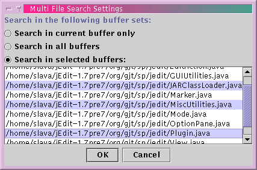

jEdit has the ability to search and replace in multiple files. To enable multi-file searching, open the Multi File Search Settings dialog box, by clicking the Multi File button in the search and replace or HyperSearch dialog box, or by selecting Multifile Search Settings from the Search menu.
The first two file sets should be self-explanatory. With "Search in selected buffers", you must Control-click to select multiple buffers from the list.
"Search in a directory" requires you to specify a starting path, a glob pattern that file names will be matched against (see Appendix C), and if the search should recurse into subdirectories or not. Keep in mind that the resulting search could require a very large number of files to be opened, which might take a while, and/or use a large amount of RAM.
Once you have selected the appropriate buffer set and clicked OK, any subsequent search and replace operations will be performed on all specified buffers.
| Warning |
The Undo command only undoes editing done in the current buffer. If a multi-file replace has been performed, Undo will have to be invoked in multiple buffers to fully reverse any changes. |
Figure 8-4. The Multi File Search Settings dialog box
